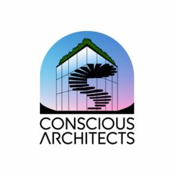

Join the Voting Bloc

Become a member of the Voting Bloc and take an active role in shaping a post trump future that works for everyone and the planet. This is more than a campaign—it’s a movement to redefine progress and capitalism. Together, we’re crafting a new way forward grounded in a shared vision of Conscious Progress. Be an Architect of the Future.
Before you continue: membership is managed on Substack, not on Vimpact.org. The external service applies its own account, privacy, and accessibility practices.
V-Impact does not yet publish member voting rights, governance rules, or a membership-data policy here. Joining currently means subscribing to V-Impact’s community channel; it is not approval of every draft proposal.
It's free to join. Consider making a donation.